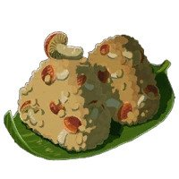

Mushroom Rice Balls

This shit made Link salivate so it'll work for you too
Ingredients
- Hylian Rice
- Hylian Shroom
- Rock Salt
Steps
- Stand by a cooking pot with lit fire underneath
- Go to Materials menu by clicking + button
- Hold Hylian Rice, Hylian Shroom, and Rock Salt
- Exit menu, and click A to Cook when prompted
- Listen to the fun music and enjoy!